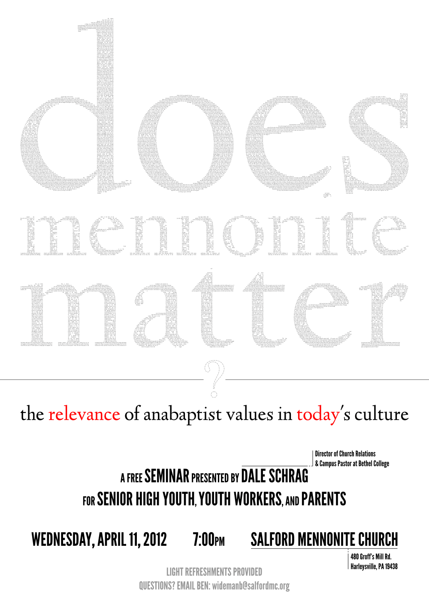
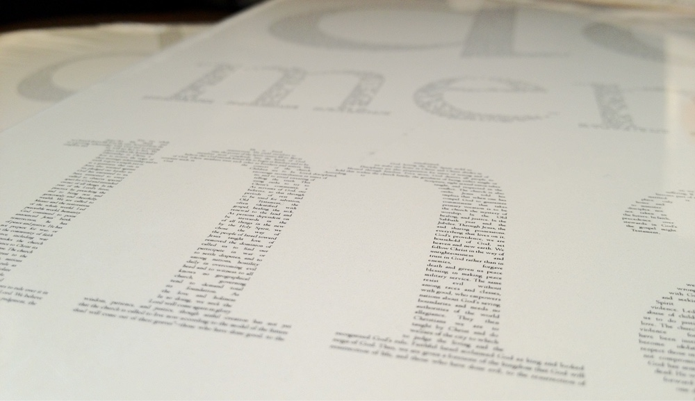
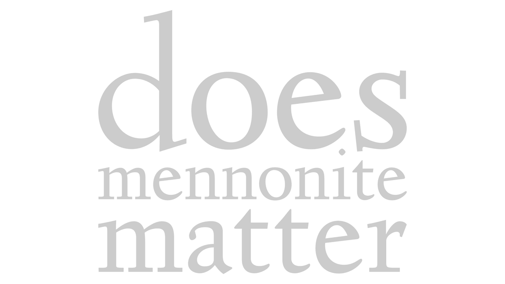

The Franconia Conference is a network of mostly southeastern Pennsylvanian Mennonite churches, and simmering within almost every one of their administrative offices is a youth pastor who enjoys the asking questions that make bored people curious, and perfectly contented people people nervous. In early 2012, a few of them wanted to ask one of those questions in front of an audience, the question was "Does Mennonite matter?," and they wanted me to design a poster for it.
We were trying to fight theological dryness, so I knew the poster had to confront it. The Confession of Faith In a Mennonite Perspective is a 24-article document which all member churches of Mennonite USA agree to: probably the most formally sanctioned answer to our event's question. It has been translated, edited, varyingly interpreted, protested, and probably—by a lot of our audience—ignored, all since its adoption by Mennonite USA in 1995. It needed to be on our poster.
It needed to be our poster.

I gathered the complete text of the Confession and set it in Linden Hill, an open source typeface by Barry Schwartz of the League of Moveable Type based on Frederic Goudy's Deepdene, and using Inkscape I flowed it within the frame defined by the shape of the words 'does mennonite matter', also in Linden Hill but set much larger.

I selected Linden Hill for the same reason I select most typefaces: because I liked it and I thought it looked nice. I was and still am also going through through a serious L.o.M.T. phase. But I enjoy researching intentional-sounding retroactive reasons for my font choices, and so far for this project I've found that one of Deepdene's first uses was in Simon & Schuster's The Bible Designed to be Read as Living Literature, published in 1936. It was an attempt to rescue biblical text from drowning in stodgy academic Christian commentary and trim it back to something anyone could read, for whatever reason they may want to read it. Its colophon, really a short essay dedicated to Deepdene, coos:
The effect as a whole is regular and well-ordered, but the variety among the individual letters speeds the eye and avoids monotony with charm.
via the Universal Digital Library & the Internet Archive
Project managed by Mike Ford, or Dad.
Event planned by Ben Wideman.
Designed by Jacob Ford in February 2014.